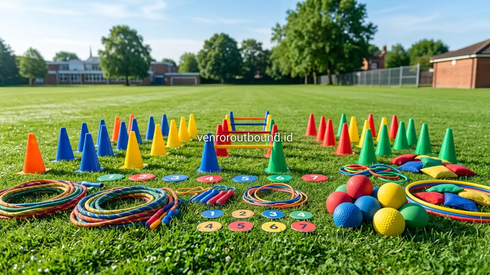

Mengapa Siswa Baru Sering Merasa Canggung Saat MPLS?
Aktivitas ice breaking games dalam Masa Pengenalan Lingkungan Sekolah (MPLS) dapat membantu siswa baru mengatasi rasa canggung ketika memasuki lingkungan sekolah baru. Permainan kelompok yang interaktif memberikan kesempatan untuk saling mengenal, berkomunikasi, dan berkolaborasi secara bertahap sehingga suasana kegiatan terasa lebih cair dan siswa memiliki ruang yang nyaman untuk membangun rasa percaya diri di lingkungan pendidikan yang baru.
Hari-hari pertama memasuki jenjang pendidikan baru, baik peralihan dari Sekolah Dasar (SD) menuju SMP maupun dari SMP menuju SMA/SMK, selalu membawa dinamika psikologis tersendiri bagi seorang remaja. Di satu sisi, ada antusiasme menyambut fase pertumbuhan baru, namun di sisi lain terdapat rasa cemas yang cukup mendalam. Siswa baru dihadapkan pada lingkungan fisik yang belum familiar, gedung sekolah yang asing, rutinitas jadwal yang berbeda, serta guru-guru baru yang belum mereka kenal karakternya.
Kondisi yang paling memicu kecanggungan adalah kehilangan jejaring sosial lama. Sebagian besar siswa mungkin terpisah dari sahabat karib mereka di sekolah sebelumnya. Berada di tengah puluhan hingga ratusan teman sebaya yang belum dikenal membuat banyak peserta didik memilih bersikap pasif, menunduk, atau hanya memegang ponsel pintar mereka selama jam istirahat. Rasa canggung ini jika dibiarkan tanpa jembatan komunikasi yang hangat dapat memperlambat proses adaptasi emosional siswa dalam menyerap materi orientasi sekolah.
Di sinilah panitia MPLS, bersama Guru Bimbingan Konseling (BK) dan kesiswaan, memegang peran penting. Menciptakan iklim sosial yang menerima dan suportif sejak hari pertama menjadi fondasi utama. Suasana hangat tidak dapat terwujud hanya melalui instruksi verbal dari atas podium, melainkan membutuhkan media interaksi langsung yang mengajak siswa bergerak, tersenyum, dan berinteraksi secara wajar tanpa beban penilaian.
Apa Itu Ice Breaking Games untuk MPLS?
Secara terminologi edukatif, ice breaking games adalah rangkaian aktivitas terstruktur berskala ringan yang dirancang untuk memecahkan kebekuan psikologis, meredakan ketegangan fisik, serta memfasilitasi interaksi sosial spontan antarindividu dalam suatu kelompok. Dalam konteks orientasi sekolah, ice breaking bukanlah sekadar selingan pengisi waktu kosong atau hiburan lelucon semata, melainkan instrumen pedagogis yang direncanakan dengan tujuan jelas.
Karakteristik utama ice breaking yang tepat untuk lingkungan sekolah adalah kesederhanaan aturan, fleksibilitas tempat, dan orientasi pada partisipasi kolektif. Permainan ini umumnya mengandalkan komunikasi verbal ringan, gestur tubuh positif, koordinasi gerak sederhana, atau teka-teki logika santai. Melalui stimulus yang menyenangkan, hormon stres (kortisol) pada siswa dapat mereda, sementara hormon kebahagiaan (endorfin dan dopamin) terpicu, sehingga menciptakan kondisi mental yang lebih terbuka terhadap informasi baru.
Dalam program kegiatan terpadu, seperti yang kerap dirancang dalam Paket Outbound Pelajar, ice breaking ditempatkan pada fase pembuka (warming up). Fase ini menjadi fondasi penting sebelum peserta diajak memasuki simulasi outbound yang menuntut kerja sama tim lebih intensif, seperti pemecahan masalah kelompok atau pembentukan komitmen kedisiplinan pelajar.
Bagaimana Ice Breaking Membantu Interaksi Siswa Baru?
Proses adaptasi sosial memerlukan tahapan kenyamanan psikologis. Ice breaking yang dirancang dengan alur berjenjang bekerja melalui beberapa mekanisme efektif:
- Menurunkan Batasan Ego dan Pertahanan Diri: Ketika seluruh peserta diajak melakukan gerakan serempak atau menertawakan kesalahan kecil bersama dalam permainan yang jenaka, sekat perbedaan asal sekolah, latar belakang ekonomi, maupun status sosial melebur seketika.
- Membuka Komunikasi Dua Arah yang Spontan: Siswa baru sering kali ragu untuk memulai percakapan karena takut dianggap aneh atau ditolak. Permainan dengan instruksi terstruktur memberikan alasan yang sah dan alami bagi mereka untuk saling menyapa, menanyakan nama, atau berkoordinasi.
- Mengaktifkan Gerak Kinestetik: Duduk mendengarkan materi ceramah selama berjam-jam di aula membuat tubuh kaku dan pikiran jenuh. Aktivitas gerak ringan melancarkan sirkulasi oksigen ke otak, sehingga daya fokus peserta kembali segar.
- Menumbuhkan Rasa Memiliki Kelompok: Begitu siswa ditempatkan dalam kelompok kecil dan berhasil menyelesaikan satu tantangan ringan, mulai tumbuh rasa solidaritas awal bahwa mereka adalah bagian dari satu kesatuan tim.
Contoh Ice Breaking Games yang Cocok untuk Siswa Baru
Pemilihan jenis permainan harus memperhatikan norma kesopanan, kenyamanan gerak, dan kesetaraan peran antarpeserta. Berikut adalah beberapa kategori aktivitas yang terbukti efektif diterapkan di lingkungan sekolah:
1. Permainan Sambung Kata Cerita Berantai
Siswa duduk dalam lingkaran kecil beranggotakan 8 hingga 10 orang. Fasilitator memberikan kalimat pembuka tentang petualangan fiktif di sekolah baru. Setiap anggota kelompok bertugas menambahkan tepat tiga kata secara bergantian searah jarum jam untuk melanjutkan alur cerita. Permainan ini memancing konsentrasi, melatih imajinasi, dan sering kali memicu gelak tawa karena alur cerita yang tak terduga, tanpa ada tekanan fisik sama sekali.
2. Permainan Detektif Kesamaan Minat
Setiap siswa dibekali selembar kartu tugas kecil dengan misi mencari 3 teman yang memiliki hobi atau kesukaan serupa, misalnya buku favorit yang sama, olahraga yang disenangi, atau cita-cita yang sejalan. Peserta harus berkeliling menyapa rekan-rekan baru secara santun. Format ini melatih keberanian berbicara secara personal dan membantu menemukan kawan yang memiliki frekuensi minat yang sama sejak hari pertama.
3. Permainan Lingkaran Tali Kolaborasi
Menggunakan seutas tali pramuka yang disambung melingkar, seluruh anggota kelompok memegang tali tersebut dengan kedua tangan. Fasilitator memberikan instruksi untuk membentuk berbagai pola geometris (seperti segitiga, bintang, atau bujur sangkar) secara bersama-sama dalam hitungan detik. Permainan ini mengajarkan koordinasi ruang, kesabaran mendengarkan instruksi, dan kepedulian terhadap posisi kawan di sebelah.
Baca Juga:
Bagaimana Membuat Ice Breaking Ramah untuk Siswa Pemalu?
Salah satu kekhawatiran terbesar guru BK dalam kegiatan orientasi adalah adanya siswa introvert atau pemalu yang merasa tertekan secara psikologis. Menjadi pusat perhatian atau dipaksa tampil sendirian di panggung di hadapan ratusan orang dapat meninggalkan trauma sosial bagi sebagian remaja.

Untuk memastikan ice breaking tetap ramah dan inklusif bagi seluruh karakter siswa, panitia disarankan menerapkan prinsip-prinsip berikut:
- Prioritaskan Format Kelompok Kecil: Bagilah siswa ke dalam kelompok beranggotakan 6 hingga 8 orang. Di lingkungan yang lebih intim, siswa pemalu merasa jauh lebih aman untuk bersuara dibandingkan di forum pleno terbuka.
- Hindari Hukuman yang Mempermalukan: Jangan pernah menggunakan sistem "hukuman" seperti mencoret wajah dengan bedak, mengenakan atribut aneh, atau menyuruh siswa menari konyol sendirian karena kalah permainan. Gantikan konsekuensi kalah dengan tugas positif, seperti memimpin tepuk semangat bersama regunya.
- Gunakan Konsep Permainan Tanpa Eliminasi: Permainan eliminasi tradisional (di mana siswa yang salah harus keluar) justru membuat peserta yang kurang cekatan merasa tersisih lebih cepat. Pilihlah permainan akumulasi poin kelompok yang membuat seluruh siswa tetap bermain hingga akhir.
- Fasilitasi Melalui Komunikasi Berpasangan: Awali sesi perkenalan dengan dialog berpasangan (two-way sharing) selama 2 menit, sebelum memperluas interaksi ke tingkat lingkaran kelompok.
Kesalahan yang Sebaiknya Dihindari Saat Ice Breaking MPLS
Meskipun berniat baik untuk mencairkan suasana, panitia terkadang melakukan kekeliruan metodologis yang justru memicu kelelahan fisik atau kecanggungan baru. Beberapa hal yang perlu diantisipasi antara lain:
1. Durasi yang Berlebihan dan Melelahkan: Ice breaking yang diselenggarakan lebih dari 90 menit tanpa jeda dapat menguras energi fisik siswa, terlebih jika dilakukan di bawah terik matahari siang. Pilihlah waktu pagi hari atau jeda transisi dengan durasi yang proporsional.
2. Instruksi yang Terlalu Rumit: Permainan dengan aturan berlapis-lapis sering kali membuat siswa bingung dan takut berbuat salah. Aturan ice breaking idealnya dapat dipahami hanya dalam waktu satu menit penjelasan singkat.
3. Mengabaikan Keselamatan Fisik Lapangan: Permainan lari cepat di area licin atau tanah berbatu tanpa inspeksi awal dapat menimbulkan risiko cedera terpeleset. Panitia harus memastikan area bebas dari kerikil tajam atau lubang rumput.
4. Membiarkan Dominasi Senior: Panitia OSIS hendaknya memposisikan diri sebagai fasilitator yang mengayomi, bukan instruktur kaku yang terus menuntut kesempurnaan barisan atau kerapian seragam saat sesi permainan berlangsung.
Bagaimana Outbound Sekolah Dapat Menjadi Bagian dari MPLS?
Menyelenggarakan orientasi sekolah yang menyenangkan kini semakin banyak memanfaatkan pendekatan outbound edukasi. Jika materi ruangan difokuskan pada pengenalan kurikulum, tata tertib, dan fasilitas perpustakaan atau laboratorium, maka sesi outbound bertindak sebagai wadah internalisasi nilai-nilai karakter.
Melalui pendekatan experiential learning (belajar melalui pengalaman nyata), siswa diajak mempraktikkan langsung nilai-nilai kepemimpinan, toleransi antarbudaya, rasa empati, serta manajemen konflik kecil dalam tim. Fasilitator profesional dari Vendor Outbound dapat mendampingi sekolah dalam menyusun alur kegiatan terstruktur, mulai dari ice breaking dinamis, dinamika kelompok, hingga sesi refleksi (debriefing) bermakna di akhir acara.
Checklist Persiapan Ice Breaking MPLS untuk Panitia
Guna membantu panitia sekolah dan guru pendamping menyusun sesi pencair suasana yang rapi, tabel berikut merangkum poin persiapan esensial:
| Komponen Persiapan | Status Kesiapan | Catatan & Rekomendasi Pelaksanaan |
|---|---|---|
| Tujuan Sesi | Wajib Ditentukan | Menentukan apakah fokus pada perkenalan nama, pengenalan visi sekolah, atau kekompakan regu. |
| Area Kegiatan | Inspeksi Keamanan | Pastikan lapangan rumput datar, bersih dari benda tajam, atau ruangan aula indoor berpendingin cukup. |
| Peralatan Media | Pra-Distribusi | Siapkan bola spons, tali kelompok, spidol, dan nomor regu dalam wadah khusus per pos permainan. |
| P3K & Hidrasi | Standar Siaga | Sediakan dispenser air minum isi ulang dan kotak obat pertolongan pertama di dekat area aktivitas. |
| Briefing Fasilitator | Penyamaan Persepsi | Pastikan seluruh panitia memahami aturan ramah anak, nada bicara sopan, dan larangan sanksi fisik. |
Buat Kegiatan MPLS Sekolah Anda Lebih Berkesan dan Ceria
Diskusikan konsep ice breaking edukatif dan program outbound pelajar yang ramah anak, aman, dan dapat disesuaikan dengan kebutuhan sekolah Anda. Kontak admin VENDOR OUTBOUND sekarang di +62 82211221909.
Hubungi Kami via WhatsAppKesimpulan
Masa Pengenalan Lingkungan Sekolah merupakan gerbang awal penentu kenyamanan belajar siswa baru sepanjang tahun ajaran mendatang. Dengan mengintegrasikan ice breaking games yang ramah anak, terstruktur, dan edukatif, panitia sekolah dapat membantu siswa mencairkan kecanggungan awal secara alami dan bermartabat.
Pendekatan yang mengedepankan kerja sama kelompok kecil, nihil eliminasi, serta bebas dari segala bentuk perpeloncoan akan menumbuhkan rasa percaya diri dan antusiasme siswa dalam menyambut masa depan pendidikannya. Perencanaan matang dan kolaborasi bersama fasilitator pendamping berpengalaman dapat mewujudkan kegiatan orientasi sekolah yang ceria, berkesan, dan penuh inspirasi positif.
Pertanyaan Sering Diajukan (FAQ)

Arby Ardiansyah
Arby Ardiansyah merupakan penulis konten yang membahas outbound, experiential learning, team building, family gathering, dan kegiatan pengembangan karakter untuk kebutuhan sekolah, keluarga, maupun perusahaan.